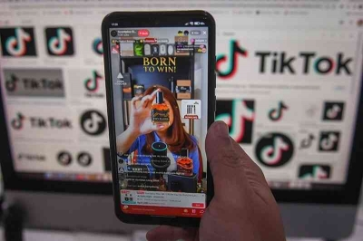

TikTok Shop Resmi Ditutup, Mendag Imbau Seller Beralih ke e-Commerce

TikTok Shop resmi ditutup dan tak bisa lagi diakses per Rabu (4/10),
pukul 17.00 WB. Alhasil konsumen sudah tidak bisa lagi berbelanja di
TikTok Shop. Penutupan TikTok Shop tersebut imbas aturan pemerintah yang
melarang social commerce atau media sosial yang merangkap sebagai
e-commerce.
Menteri Perdagangan (Mendag) Zulkifli Hasan meminta pedagang yang selama
ini berjualan di TikTok Shop untuk tidak perlu khawatir. Pria yang karib
dipanggil Zulhas itu bahkan mengimbau seller untuk pindah ke platform
e-commerce."Silahkan kan bisa ke e-commerce. Ya pindah, ke Shopee atau
ke e-commerce lain, kan mau tuh mereka nampung," ungkap Zulhas, belum
lama ini. Zulhas meminta para seller untuk memanfaatkan fitur live
streaming di e-commerce.
Sehingga mereka masih tetap bisa berjualan secara live seperti yang
selama ini dilakukan di TikTok Shop. Apalagi saat ini sudah banyak
e-commerce yang memiliki fitur atau layanan jualan secara live. "Yang
live-live itu juga bisa di e-commerce. Kan ada itu," kata Mendag Zulhas.
Sementara itu, melalui akun Instagramnya, Menteri Koperasi dan UKM
(MenKop-UKM) Teten Masduki mengatakan pemisahan media sosial TikTok
dengan TikTok Shop tidak bakal merugikan pedagang atau seller.
Teten menilai dengan pemisahan itu, justru TikTok sebagai media sosial
akan bisa menjadi sarana untuk promosi. Sementara transaksinya dilakukan
melalui media lain seperti WhatsApp, e-commerce, atau platform lain
sesuai keinginan seller. Sehingga seller punya opsi lebih banyak untuk
bertransaksi dengan konsumen.